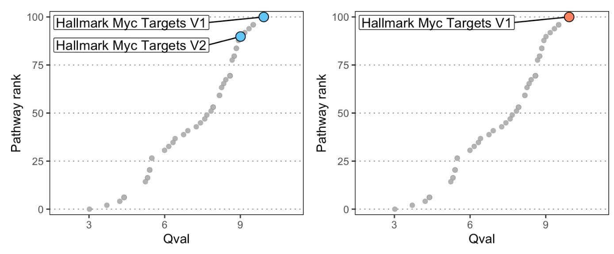
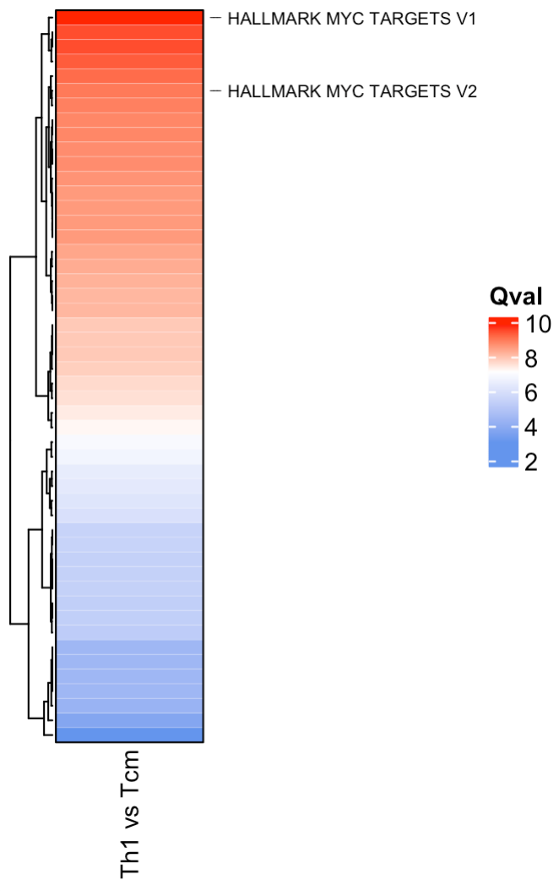
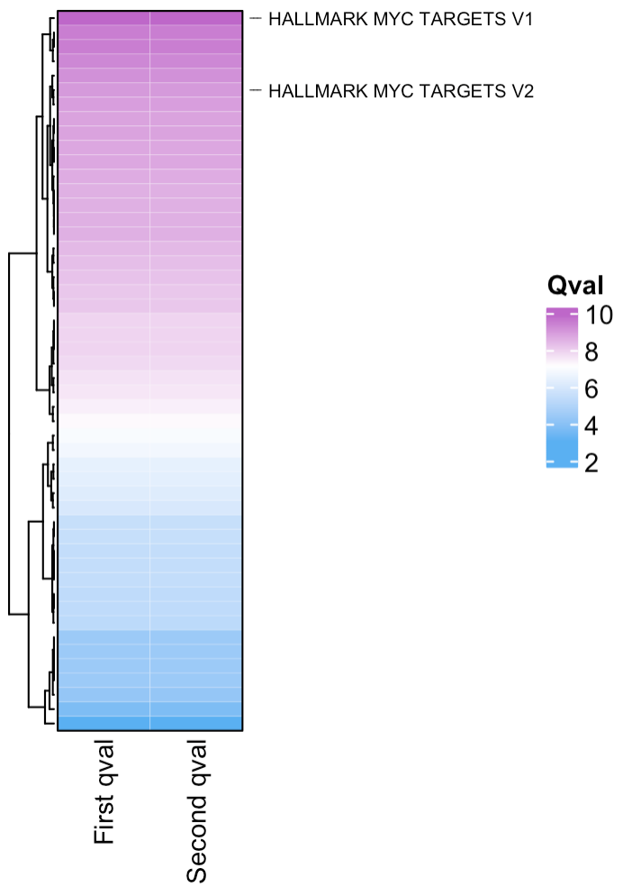

Visualising the output from SCPA is best done by considering the relative ranks of the qvals. This will give you the best chance to find the most appropriate signal.
Lets load in some packages
We can use data from the comparison we did in the quick start tutorial where we compared Th1 and Tcm cells. You can get this rds file here.
scpa_out <- readRDS("th1_tcm.rds")scpa_out is the standard output from a two sample SCPA
comparison:
head(scpa_out)
#> Pathway Pval adjPval qval
#> 32 HALLMARK_MYC_TARGETS_V1 5.788383e-101 2.894192e-99 9.926655
#> 2 HALLMARK_ALLOGRAFT_REJECTION 7.532277e-93 3.766139e-91 9.509159
#> 31 HALLMARK_MTORC1_SIGNALING 7.532277e-93 3.766139e-91 9.509159
#> 36 HALLMARK_OXIDATIVE_PHOSPHORYLATION 1.061001e-89 5.305003e-88 9.342126
#> 23 HALLMARK_IL2_STAT5_SIGNALING 1.315549e-86 6.577745e-85 9.175071
#> 33 HALLMARK_MYC_TARGETS_V2 1.435838e-83 7.179192e-82 9.007992
#> FC
#> 32 -87.81108
#> 2 -21.07656
#> 31 -45.82991
#> 36 -47.98635
#> 23 -20.23701
#> 33 -20.71347We can use the plot_rank function in SCPA to plot the
rank of a specific pathway (or pathways) that we want to highlight. By
default, this looks for a qval and Pathway
column, which is standard in the SCPA output.
If you have your own data frame that contains all your qvals and a
Pathway column, you can specify the column you want on the y axis with
the population_name = [your_qval_column_name] argument. See
?plot_rank for all the graphical parameters, but this is a
ggplot object, so you can modify it using the typical arguments
e.g. + theme(panel.background...).
# if you want all pathways that contain "MYC"...
p1 <- plot_rank(scpa_out, "myc",
highlight_point_size = 3.5, highlight_point_color = "#60c5f7")
# or if you want a specific myc pathway...
p2 <- plot_rank(scpa_out, "HALLMARK_MYC_TARGETS_V1",
highlight_point_size = 3.5, highlight_point_color = "#fa815c")
patchwork::wrap_plots(p1, p2)
You can use the plot_heatmap option within SCPA to
visualise the output, which uses the great ComplexHeatmap
package. Like the plot_rank function, you can choose to
highlight general or specific pathways. By default, this function looks
for any column names that contain “qval”, and uses them to plot the
heatmap. This means you can combine muliple SCPA results into a single
heatmap. See ?plot_heatmap for graphical parameters.
plot_heatmap(scpa_out,
highlight_pathways = "myc",
column_names = "Th1 vs Tcm",
show_row_names = F)
If you want to combine multiple scpa outputs into a single heatmap, you can add your qvals into a single data frame. You just need to make sure the column you’re adding contains “qval” in its name e.g.
# here we'll just duplicate the qval column for the purpose of this example
scpa_out %>%
mutate(another_qval = qval) %>%
plot_heatmap(highlight_pathways = "myc",
hm_colors = c("#5ab0f2", "white", "#be67c9"),
column_names = c("First qval", "Second qval"),
cluster_columns = F,
show_row_names = F)